This project studies free riding in dynamic public-good provision. Public goods such as environmental governance, open-source maintenance, public infrastructure, and community services create a common dilemma: the collective stock benefits all participants, while contribution costs are borne privately. To explain this mechanism, the project develops a simulation-based Dynamic Stock–Pressure Free-Riding framework that links heterogeneous agents, contribution, public-good stock, maintenance pressure, demand feedback, capacity saturation, and policy intervention in one dynamic multi-agent system.
Under controlled synthetic scenarios, the model compares a Nash-style individual-rational benchmark with a stage-wise social-planner benchmark, quantifies free-riding gaps, under-provision, and welfare loss, and evaluates subsidy, penalty, reputation, matching fund, threshold governance, and combined portfolio policies. The numerical experiments suggest that public-good governance should be scenario-specific: low-cost incentive correction is suitable when the system remains stable, while portfolio governance becomes more appropriate when maintenance pressure and reliability risks dominate.
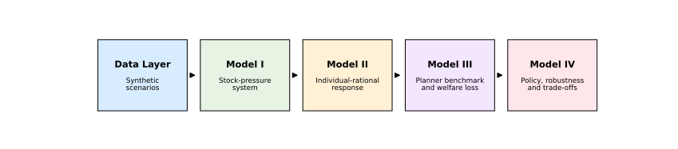
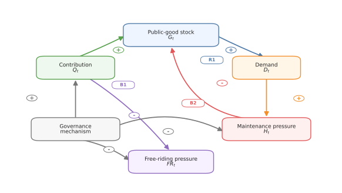
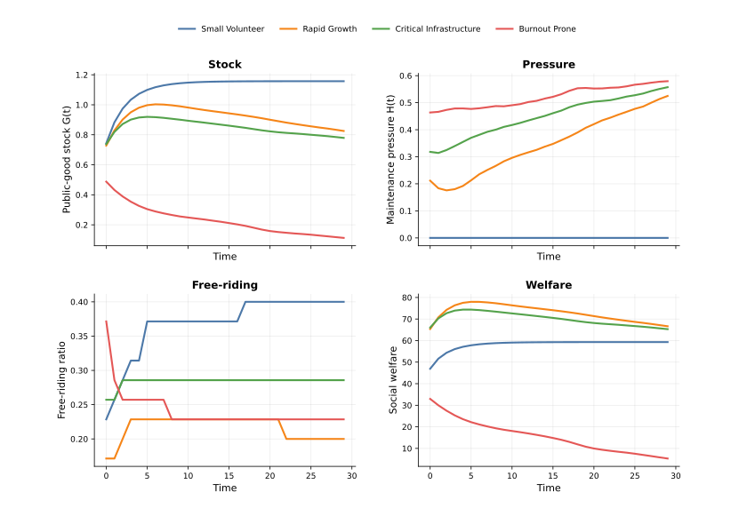
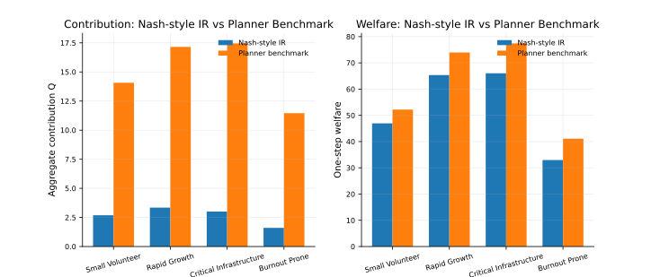
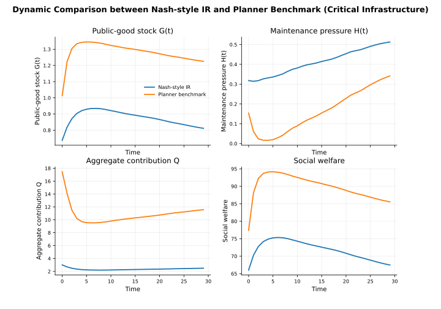
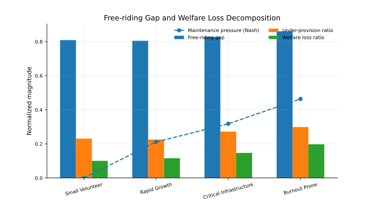
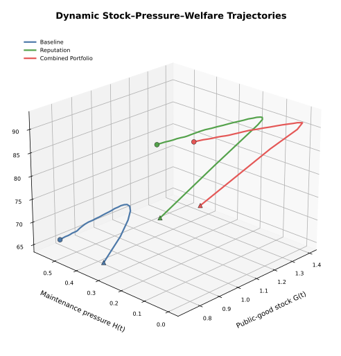
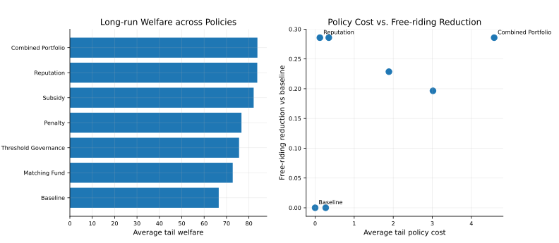
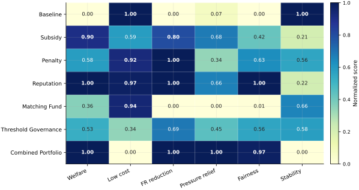
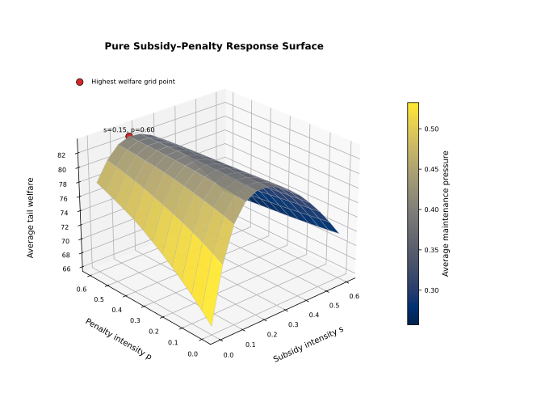
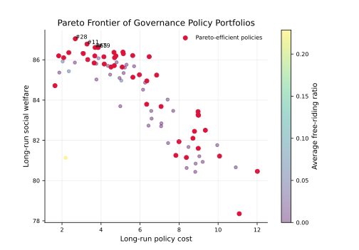
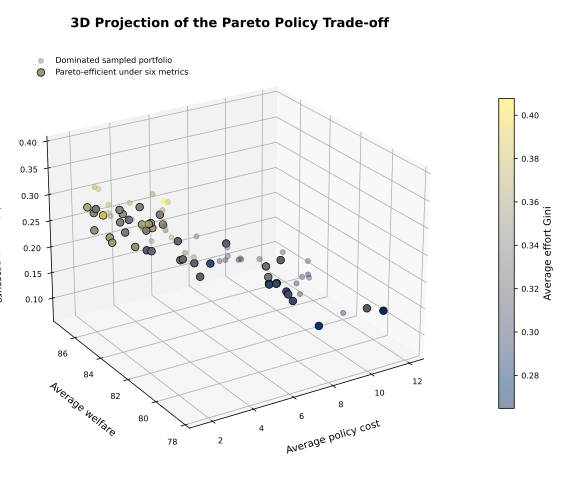
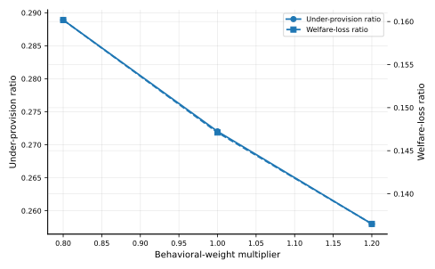
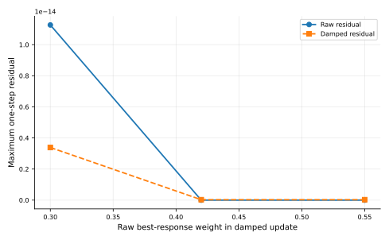
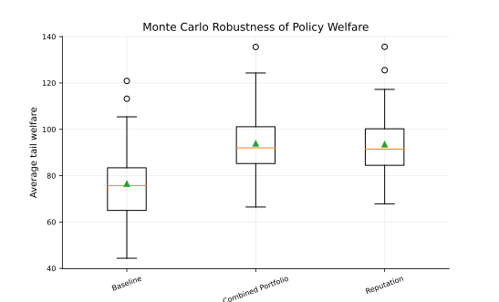
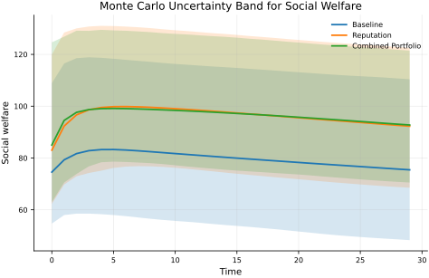